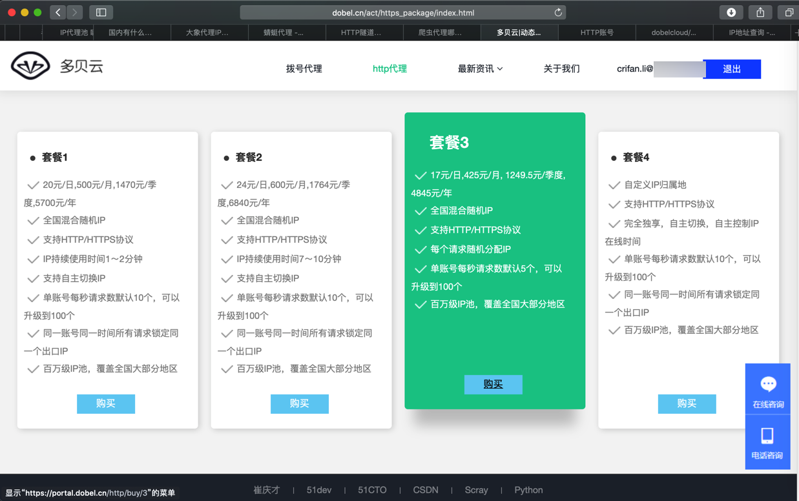
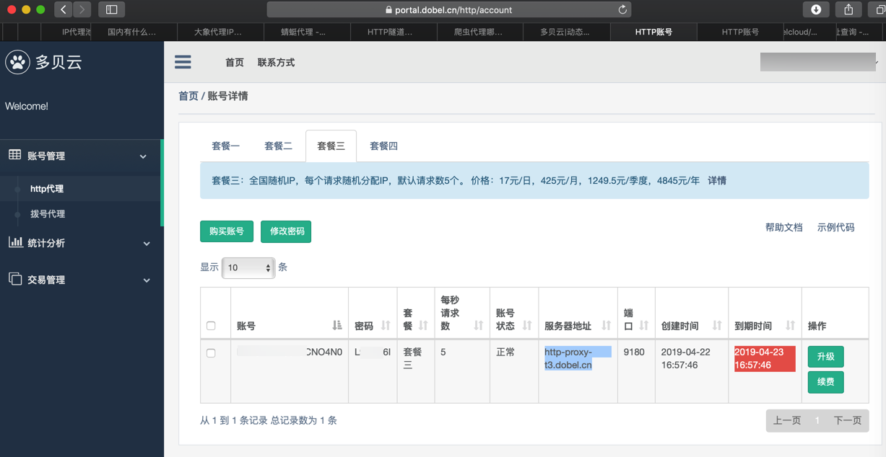
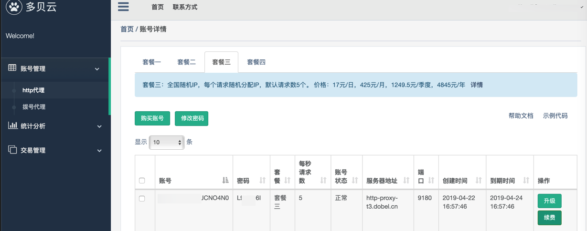
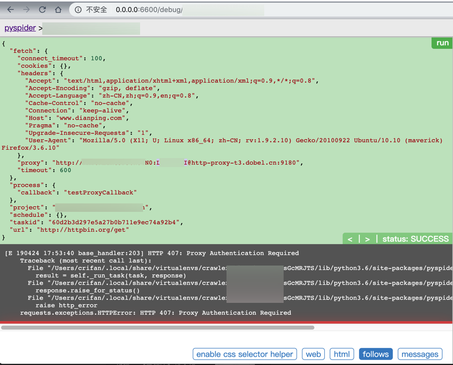

多贝云代理
之前也去用过
觉得也还可以。
下面记录购买和使用过程。
不同套餐对比
- 多贝云
- 套餐2：每一段时间内的请求，IP都是固定不变的
- 注：
- 套餐2的时间是7~10分钟
- 套餐1是1~2分钟
- 有效期过了后，会自动更换新IP的
- 无需手动更换
- 当然如果想要手动，主动，更换IP，也是支持的
- 详见：多贝云|动态IP代理拨号代理VPN代理动态HTTP代理
- 主动切换IP：
- 整个过程无需变更代理服务器和端口信息，而是通过调用API实现自动切换IP。应用程序通过HTTP隧道请求 http://ip.dobel.cn/switch-ip ，请求执行成功会返回一个新的IP地址及其剩余可用时长，后续的请求将都会通过新的出口IP地址进行转发
- 查看当前IP
- 请求 http://ip.dobel.cn/current-ip 能够获取到当前分配到出口IP以及剩余的可用时长信息。
- 举例
curl -x http-proxy-t2.dobel.cn:9180 -U ProxyUsername:ProxyPassword http://ip.dobel.cn/current-ip- 返回：
{"wanip":"117.69.50.223","resttime":-215}%
- 主动切换IP：
- 详见：多贝云|动态IP代理拨号代理VPN代理动态HTTP代理
- 注：
- 套餐3：每次请求，IP都不同
- 才是我们希望的，动态IP
- 套餐2：每一段时间内的请求，IP都是固定不变的
购买多贝云的HTTP代理
从
点击 套餐3

再去选择具体配置：

用支付宝支付后，返回订单：

返回 账号管理->http代理，即可看到已购产品：

把其中的账号和密码放在代码中，即可使用。
使用多贝云
关于如何在代码中使用多贝云代理，可以参考后续章节：PySpider中使用代理
用了一段时间后，还可以去看统计信息：

账号过期
如果账号过期了：

则（PySpider中）会出现：
requests.exceptions.HTTPError: HTTP 407: Proxy Authentication Required
的错误：
[E 190424 17:53:40 base_handler:203] HTTP 407: Proxy Authentication Required
Traceback (most recent call last):
File "/Users/crifan/.local/share/virtualenvs/ crawler_xxx-sGcMRJTS/lib/python3.6/site-packages/pyspider/libs/base_handler.py", line 196, in run_task
result = self._run_task(task, response)
File "/Users/crifan/.local/share/virtualenvs/ crawler_xxx-sGcMRJTS/lib/python3.6/site-packages/pyspider/libs/base_handler.py", line 175, in _run_task
response.raise_for_status()
File "/Users/crifan/.local/share/virtualenvs/ crawler_xxx-sGcMRJTS/lib/python3.6/site-packages/pyspider/libs/response.py", line 184, in raise_for_status
raise http_error
requests.exceptions.HTTPError: HTTP 407: Proxy Authentication Required
